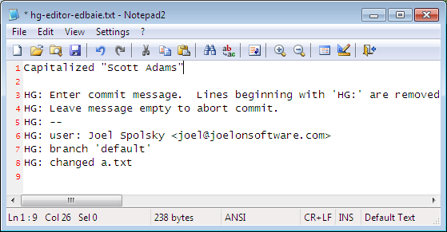

Mercurial is a version control system. Developers use it to manage source code. It serves two important purposes:
- It keeps track of every old version of every file
- It can merge different versions of your code, so that teammates can work independently on the code and then merge their changes
Without Mercurial, you could try to keep old versions just by making a lot of copies of the directory containing all your code:

This is tedious, takes up a lot of disk space, and confusing. Using version control is a better way to do this.
Most people work with Mercurial through the command line, which works on Windows, Unix, and Mac. The command for Mercurial is hg:
c:\hginit> hg
Mercurial Distributed SCM
basic commands:
add add the specified files on the next commit
annotate show changeset information by line for each file
clone make a copy of an existing repository
commit commit the specified files or all outstanding changes
diff diff repository (or selected files)
export dump the header and diffs for one or more changesets
forget forget the specified files on the next commit
init create a new repository in the given directory
log show revision history of entire repository or files
merge merge working directory with another revision
pull pull changes from the specified source
push push changes to the specified destination
remove remove the specified files on the next commit
serve export the repository via HTTP
status show changed files in the working directory
summary summarize working directory state
update update working directory
use "hg help" for the full list of commands or "hg -v" for details
Typing hg without anything else gives you a list of the most common commands that are available. You can also try hg help for a complete list of commands.
To take advantage of version control, you needed a repository. A repository stores all your old versions of every file. To save disk space, it’s not actually going to store every old version—it’s just going to store a compact list of changes.
In the old days, getting a repository was a big deal. You had to have a central server somewhere and you had to install software on it. Mercurial is distributed, so you can use it without a fancy central server. You can run it entirely on your own computer. And getting a repository is super-easy: you just go into the top-level directory where all your code lives…
c:\hginit> cd CountDown
c:\hginit\CountDown> dir /w
Volume in drive C has no label.
Volume Serial Number is 9862-36C5
Directory of c:\hginit\CountDown
[.] [..] a.txt
AlternateMessages.xml App.config App.xaml
App.xaml.cs CountDown.xaml CountDown.xaml.cs
DevDaysCountDown.csproj favicon.ico [Images]
[Properties] [TweetSharp]
9 File(s) 155,932 bytes
5 Dir(s) 76,083,609,600 bytes free
… there’s my code, and you type hg init:
creates a repository
c:\hginit\CountDown> hg init c:\hginit\CountDown>
Wait a minute, did anything happen? It doesn’t look like anything happened. But if you look closely, you’ll see that there’s a new directory there, named .hg:
c:\hginit\CountDown> dir /w
Volume in drive C has no label.
Volume Serial Number is 9862-36C5
Directory of c:\hginit\CountDown
[.] [..] [.hg]
a.txt AlternateMessages.xml App.config
App.xaml App.xaml.cs CountDown.xaml
CountDown.xaml.cs DevDaysCountDown.csproj favicon.ico
[Images] [Properties] [TweetSharp]
9 File(s) 155,932 bytes
6 Dir(s) 76,083,650,560 bytes free
That’s the repository! It’s a directory full of everything Mercurial needs. Settings, old version of files, tags, an extra pair of socks for when it rains, etc. Don’t go in there. You are almost never going to want to mess with that directory directly.
OK, now that we have a fresh new repository, we’re going to want to add all these source files to it. That’s easy, too: just type hg add.
schedules files to be added to the repository. They won’t actually be added until you commit
c:\hginit\CountDown> hg add adding AlternateMessages.xml adding App.config adding App.xaml adding App.xaml.cs adding CountDown.xaml adding CountDown.xaml.cs adding DevDaysCountDown.csproj adding Images\background_city.jpg adding Images\carsonified_presents.png adding Images\darkpanel.png adding Images\devdays.png adding Images\failwhale.png adding Images\holding_image.jpg adding Images\jeff_atwood.jpg adding Images\joel_spolsky.jpg adding Images\logo_stackoverflow.png adding Images\matt_lacey.jpg adding Images\sideDarkpanel.png adding Images\vertical_lines2.png adding Properties\AssemblyInfo.cs adding Properties\Resources.Designer.cs adding Properties\Resources.resx adding Properties\Settings.Designer.cs adding Properties\Settings.settings adding TweetSharp\Dimebrain.TweetSharp.dll adding TweetSharp\Dimebrain.TweetSharp.xml adding TweetSharp\Newtonsoft.Json.dll adding a.txt adding favicon.ico
There’s still one more step… you have to commit your changes. What changes? The change of adding all those files.
Why do you have to commit? With Mercurial, committing says “hey, the way the files look right now—please remember that.” It’s like making a copy of the whole directory… every time you have something that you’ve changed that you sorta like, you commit.
saves the current state of all files to the repository
c:\hginit\CountDown> hg commit
Mercurial will pop up an editor so that you can type a commit message. This is just something you type to remind yourself of what changed in this commit.

When you save and exit, your files will be committed.
You can type hg log to see a history of changes. It’s like your repository’s blog:
shows the history of changes committed to the repository
c:\hginit\CountDown> hg log changeset: 0:da5f372c3901 tag: tip user: Joel Spolsky <joel@joelonsoftware.com> date: Fri Feb 05 13:04:30 2010 -0500 summary: Initial version of the CountDown code
Let’s edit a file and see what happens.


Now that we’ve made another change, we can commit it using hg commit:
c:\hginit\CountDown> hg commit
Notice that Mercurial has figured out that only one file, a.txt, changed:
And now that I’ve committed, let’s take a look at the log:
c:\hginit\CountDown> hg log changeset: 1:a9497f468dc3 tag: tip user: Joel Spolsky <joel@joelonsoftware.com> date: Fri Feb 05 13:26:13 2010 -0500 summary: Capitalized "Scott Adams" changeset: 0:da5f372c3901 user: Joel Spolsky <joel@joelonsoftware.com> date: Fri Feb 05 13:04:30 2010 -0500 summary: Initial version of the CountDown code
Like any modern blogger, Mercurial puts the newest stuff on top.
I’m going to make one more change, just to amuse myself.
Committing:
c:\hginit\CountDown> hg commit
My commit message:

And now what does the log show?
c:\hginit\CountDown> hg log changeset: 2:55490459b740 tag: tip user: Joel Spolsky <joel@joelonsoftware.com> date: Fri Feb 05 13:47:43 2010 -0500 summary: Fixed some grammar changeset: 1:a9497f468dc3 user: Joel Spolsky <joel@joelonsoftware.com> date: Fri Feb 05 13:26:13 2010 -0500 summary: Capitalized "Scott Adams" changeset: 0:da5f372c3901 user: Joel Spolsky <joel@joelonsoftware.com> date: Fri Feb 05 13:04:30 2010 -0500 summary: Initial version of the CountDown code
OK, that was a lot of fun. I made some changes, and each time I made a significant change, I committed it to the repository.
I know what you’re thinking. You’re thinking, “JOEL, THIS ALL SEEMS LIKE A BIG WASTE OF TIME.” Why go through all this rigamarole of committing?
Patience, young grasshopper. You’re about to learn how to get some benefit out of this.
Number one. Let’s say you make a huge mistake editing.
And then, gosh, just for good measure you delete a couple of really important files.
c:\hginit\CountDown> del favicon.ico c:\hginit\CountDown> del App.xaml
In the days before Mercurial, this would be a good opportunity to go crying to the system administrator and asking piercingly sad questions about why the backup system is “temporarily” out of commission and has been for the last eight months.
The system administrator, whom everybody calls Taco, is too shy to eat lunch with the rest of the team. On those rare occasions where he is away from his swivel office chair, you will notice a triangular-shaped salsa-colored stain on the seat where drippings of his many Mexican lunches fell between his legs, insuring that nobody takes his chair, even though it is the superior Herman Miller variety that the company founders bought themselves, not the standard-issue Staples $99 special that causes everyone else back pain.
Anyway, yeah, there’s no backup.
Thanks to Mercurial, though, when you’re unhappy with your changes, you can just issue the handy command hg revert which will immediately revert your directory back to the way it was at the time of the last commit.
revert changed files back to committed version
c:\hginit\CountDown> hg revert --all reverting App.xaml reverting a.txt reverting favicon.ico c:\hginit\CountDown> type a.txt SCOTT ADAMS: Normal people believe that if it isn't broken, don't fix it. Engineers believe that if it isn't broken, it doesn't have enough features yet.
I used the command line argument --all because I wanted
to revert all files back to their original state.
So, when you’re working on source code with Mercurial:
- Make some changes
- See if they work
- If they do, commit them
- If they don’t, revert them
- GOTO 1
(I know. Between the Windows command prompt and the GOTO statements, I am the least cool programmer who ever lived.)
shows a list of changed files
As time goes on, you may get confused about where you are and what changes you’ve made since the last commit. Mercurial keeps track of all that for you. All you have to do is type hg status and Mercurial will give you a list of files that have changed.
Suppose I create a file, edit a file, and delete a file.
c:\hginit\CountDown> copy a.txt b.txt
1 file(s) copied.
c:\hginit\CountDown> notepad2 a.txt
c:\hginit\CountDown> del favicon.ico
c:\hginit\CountDown> hg status
M a.txt
! favicon.ico
? b.txt
hg status lists any files that have changed with a little letter at the beginning of the line telling you what’s up. “M” means “Modified”—the file has been changed. “!” means missing—the file is supposed to be there, but it disappeared. “?” means unknown—Mercurial doesn’t know anything about this file. Yet.
Let’s deal with these changes one at a time. That modified file, a.txt. What’s modified about it? You may have forgotten what you changed! Heck, I can barely even remember what I ate for breakfast most days. Which is especially worrisome because it’s ALWAYS CHEERIOS. Anyway, a.txt has changed. What changed?
There’s a command for that: hg diff tells you exactly what’s changed with a file since the last commit.
shows what changed in a file
c:\hginit\CountDown> hg diff a.txt diff -r 55490459b740 a.txt --- a/a.txt Fri Feb 05 13:47:43 2010 -0500 +++ b/a.txt Fri Feb 05 14:31:18 2010 -0500 @@ -1,3 +1,3 @@ -SCOTT ADAMS: Normal people believe that if it isn't +SCOTT ADAMS: Civilians believe that if it isn't broken, don't fix it. Engineers believe that if it isn't broken, it doesn't have enough features yet.
This format is a little bit cryptic, but the interesting part is that you can see some lines that begin with a minus, which were removed, and lines that begin with a plus, which were added, so you can see here that “Normal people” was edited to be “Civilians”.
schedules files to be removed from the repository. They won’t actually be removed until you commit.
Now. That missing file, favicon.ico. As earlier, if you didn’t mean to delete it, you can hg revert, but let’s assume you really did mean to remove it. Whenever you remove (or add) a file, you have to tell Mercurial:
c:\hginit\CountDown> hg remove favicon.ico c:\hginit\CountDown> hg status M a.txt R favicon.ico ? b.txt
The “R” means “Removed” so the next time we commit in Mercurial this file will be removed. (The history of the file will remain in the repository, so of course we can always get it back). Finally, we need to add that new file, b.txt:
c:\hginit\CountDown> hg add adding b.txt c:\hginit\CountDown> hg st M a.txt A b.txt R favicon.ico
“A” means “Added.” Did you notice I was getting lazy about typing out hg status all the time? Mercurial only needs enough letters to disambiguate, and there are no other commands that start with st.
Having solved all the little ?’s and !’s, I can go ahead and check in my changes:
c:\hginit\CountDown> hg commit c:\hginit\CountDown> hg log changeset: 3:2f4718ee168e tag: tip user: Joel Spolsky <joel@joelonsoftware.com> date: Fri Feb 05 14:54:45 2010 -0500 summary: A few highly meaningful changes. No favicon.ico no more. changeset: 2:55490459b740 user: Joel Spolsky <joel@joelonsoftware.com> date: Fri Feb 05 13:47:43 2010 -0500 summary: Fixed some grammar changeset: 1:a9497f468dc3 user: Joel Spolsky <joel@joelonsoftware.com> date: Fri Feb 05 13:26:13 2010 -0500 summary: Capitalized "Scott Adams" changeset: 0:da5f372c3901 user: Joel Spolsky <joel@joelonsoftware.com> date: Fri Feb 05 13:04:30 2010 -0500 summary: Initial version of the CountDown code
One more thing about the output from hg log: the changeset line shows us a number to every commit…. actually two numbers: a handy, short one, like “0” for your initial revision, etc., and a long, goofy hexadecimal one which you can ignore for now.
Remember that Mercurial keeps, in the repository, enough information to reconstruct any old version of any file.
shows any revision of any file.
First of all, the simple command hg cat can be used to print any old version of a file. For example, to see what a.txt looks like now:
c:\hginit\CountDown> hg cat a.txt SCOTT ADAMS: Civilians believe that if it isn't broken, don't fix it. Engineers believe that if it isn't broken, it doesn't have enough features yet.
To see what it looked like in the past, I can just pick a changeset number from the log. Then I use the cat command with the -r (“revision”) argument:
c:\hginit\CountDown> hg cat -r 0 a.txt Scott Adams: Normal people believe that if it ain't broke, don't fix it. Engineers believe that if it ain't broke, it doesn't have enough features yet.
If the file is long and complicated, and only a little bit of it changed, I can use the hg diff command with an -r argument to print the difference between any two revisions. For example, to see what changed between revisions 0 and 1:
c:\hginit\CountDown> hg diff -r 0:1 a.txt diff -r da5f372c3901 -r a9497f468dc3 a.txt --- a/a.txt Fri Feb 05 13:04:30 2010 -0500 +++ b/a.txt Fri Feb 05 13:26:13 2010 -0500 @@ -1,3 +1,3 @@ -Scott Adams: Normal people believe that if it ain't +SCOTT ADAMS: Normal people believe that if it ain't broke, don't fix it. Engineers believe that if it ain't broke, it doesn't have enough features yet.
Finally, if you haven’t collapsed yet from exhaustion, before I finish this tutorial, I just want to show you one more tiny thing: you can use the hg update command to go backwards or forwards in time to any revision you want. Well, you can’t really go into the future per se, although that would be super-cool. If you only had four revisions you would just hg update -r 103994 and get some really cool anti-gravity sci-fi futuristic version of your source code. But of course, that is not possible.
update the working directory to a particular revision
What is possible is going back to any version. Watch:
c:\hginit\CountDown> hg update -r 0 2 files updated, 0 files merged, 1 files removed, 0 files unresolved c:\hginit\CountDown> type a.txt Scott Adams: Normal people believe that if it ain't broke, don't fix it. Engineers believe that if it ain't broke, it doesn't have enough features yet. c:\hginit\CountDown> hg up -r 1 1 files updated, 0 files merged, 0 files removed, 0 files unresolved c:\hginit\CountDown> type a.txt SCOTT ADAMS: Normal people believe that if it ain't broke, don't fix it. Engineers believe that if it ain't broke, it doesn't have enough features yet. c:\hginit\CountDown> hg up 2 files updated, 0 files merged, 1 files removed, 0 files unresolved c:\hginit\CountDown> type a.txt SCOTT ADAMS: Civilians believe that if it isn't broken, don't fix it. Engineers believe that if it isn't broken, it doesn't have enough features yet.
hg update is actually modifying every file in the directory that changed to go backwards and forwards through time. If a file was added or removed, it adds or removes it. Without any arguments, hg update goes to the latest version.
Test yourself
OK! That’s it for tutorial one. Here’s all the things you should know how to do now:
- Create a repository
- Add and remove files in a repository
- After making changes, see what uncommitted changes you made, then
- … commit if you like them,
- … or revert if you don’t.
- See old versions of files, or even move your directory backwards and forwards in time
• A complete version control system based on Mercurial and Git
• Branching and merging that really works
• Secure hosting on our servers
• Seamlessly integrated code review
Looking for more?
Fog Creek offers free monthly webinars that go over the basics of Mercurial. Sign up at fogcreek.com.
Any questions?
Looking for help with Kiln? Check out the Kiln Knowledge Base.
About the author.
Joel Spolsky is the founder of Fog Creek Software, a New York company that proves that you can treat programmers well and still be profitable. Programmers get private offices, free lunch, and work 40 hours a week. Customers only pay for software if they’re delighted. Fog Creek makes FogBugz, Kiln, and Fog Creek Copilot. Joel's blog Joel on Software is read by programmers everywhere.